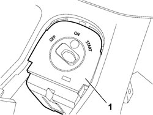
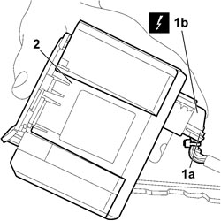

Procedures › 55 ELECTRICAL EQUIPMENT › 5520 ENGINE STARTING › 5520A IGNITION SWITCH › 5520A10 IGNITION SWITCH ASSEMBLY - R+R 5520A10 IGNITION SWITCH ASSEMBLY - R+R
Path Procedures > 55 ELECTRICAL EQUIPMENT > 5520 ENGINE STARTING > 5520A IGNITION SWITCH > 5520A10 IGNITION SWITCH ASSEMBLY - R+R
Kind repair procedure (removal / refitting; the operation number is the code)
Applies to all engines; all production periods
Interactive page https://sloeber94.github.io/elrnDB-fCrm/en/#/194000704
Applies to: all engines; all production periods
- Turn the ignition key to the OFF position.
- Disconnect the negative battery terminal.
Op. 7040L28 TUNNEL SWITCH PANEL - R R
1. Use an appropriate tool to prise the ignition switch carefully out of its seat.

Applies to: all engines; all production periods
1. Raise anchorage lever (1a) and disconnect electrical connection (1b) from the ignition switch.
2. Remove the ignition switch from the vehicle.

Applies to: all engines; all production periods
- Connect the electrical connections to the ignition switch.
- Fit the ignition switch in its seat.
Op. 7040L28 TUNNEL SWITCH PANEL - R R
- Reconnect the negative battery terminal.
Topics linked from this page (3)
Topics that link to this page (28) A002 ALARM AND CENTRAL LOCKING NOT ACTIVATED fault diagnosis table (symptom -> numbered test steps) · all engines; all production periods B007 IGNITION KEY CANNOT BE ACKNOWLEDGED fault diagnosis table (symptom -> numbered test steps) · all engines; all production periods 5520AA IGNITION SWITCH EFFICIENCY CHECK test / check procedure · all engines; all production periods 3330B02 PEDAL ASSEMBLY - R.R repair procedure (removal / refitting; the operation number is the code) · engines: 1.8, 2.2, 1.9 JTD 8v, 1.9 JTD 16v; all production periods 3330B08 PEDAL MOUNT ASSEMBLY - R R AND OVERHAUL WITH FACIA TRIM SUPPORT BEAM REMOVED FOR RIGHT-HAND DRIVE VERSIONS repair procedure (removal / refitting; the operation number is the code) · engines: 2.2, 1.9 JTD 16v, 2.4 JTD 20v; all production periods 3330B22 BRAKE PEDAL - R+R FOR MANUAL GEARBOX VERSIONS repair procedure (removal / refitting; the operation number is the code) · engines: 1.8, 2.2, 1.9 JTD 8v, 1.9 JTD 16v; all production periods 3330B26 CLUTCH PEDAL - R+R repair procedure (removal / refitting; the operation number is the code) · engines: 1.8, 2.2, 1.9 JTD 8v, 1.9 JTD 16v; all production periods 3330B38 PEDAL UNIT MOUNT - R.R. repair procedure (removal / refitting; the operation number is the code) · engines: 1.8, 2.2, 1.9 JTD 8v, 1.9 JTD 16v; all production periods 3350E30 LATERAL ACCELERATION AND SLEWING SENSOR - R.R repair procedure (removal / refitting; the operation number is the code) · all engines; all production periods 3380A10 HANDBRAKE LEVER - R+R repair procedure (removal / refitting; the operation number is the code) · all engines; all production periods 3380A30 HANDBRAKE CABLE - R+R repair procedure (removal / refitting; the operation number is the code) · all engines; all production periods 5010B47 SIDE AIR DUCT TO REAR SEATS (ONE), LH OR RH - R.R. repair procedure (removal / refitting; the operation number is the code) · all engines; all production periods 5010B56 DUCT BETWEEN CLIMATE CONTROL SYSTEM HOUSING AND AIR DUCT TO REAR SEATS - R.R. repair procedure (removal / refitting; the operation number is the code) · all engines; all production periods 5040C10 AIR CONDITIONING CASING - R.R repair procedure (removal / refitting; the operation number is the code) · all engines; all production periods 5040C50 AIR CONDITIONING HEATER RADIATOR - R.R. repair procedure (removal / refitting; the operation number is the code) · all engines; all production periods 5040C64 A/C EVAPORATOR - R+R repair procedure (removal / refitting; the operation number is the code) · all engines; all production periods 5040D80 AIR CONDITIONER SYSTEM WIRING BUNDLE - R R OR REPLACE repair procedure (removal / refitting; the operation number is the code) · all engines; all production periods 5040D94 AIR CONDITIONING LEFT UPPER AIR DISTRIBUTION FLAP MOTOR (DEFROST) - R.R repair procedure (removal / refitting; the operation number is the code) · all engines; all production periods 5505C10 FRONT CROSSMEMBER WIRING - R.R repair procedure (removal / refitting; the operation number is the code) · all engines; all production periods 5505C31 BUILT-IN WIRING UNDER DASHBOARD - R.R. repair procedure (removal / refitting; the operation number is the code) · all engines; all production periods 5505C41 PASSENGER COMPARTMENT WIRING - R.R repair procedure (removal / refitting; the operation number is the code) · all engines; all production periods 7040A10 DASHBOARD TRIM - R+R repair procedure (removal / refitting; the operation number is the code) · all engines; all production periods 7040A97 INSTRUMENT PANEL TRIM SUPPORTING CROSSMEMBER - R.R repair procedure (removal / refitting; the operation number is the code) · all engines; all production periods 7040L17 PASSENGER COMPARTMENT FLOOR FRONT CARPET - R.R. repair procedure (removal / refitting; the operation number is the code) · all engines; all production periods 7040L18 PASSENGER COMPARTMENT FLOOR REAR CARPET - R.R. repair procedure (removal / refitting; the operation number is the code) · all engines; all production periods 7040L20 TUNNEL COVER - R.R repair procedure (removal / refitting; the operation number is the code) · all engines; all production periods 7045A23 SUPPORT/GUIDE FOR FRONT SEAT, LEFT OR RIGHT - R.R. repair procedure (removal / refitting; the operation number is the code) · all engines; all production periods 7095E22 SOUND-PROOF PANEL UNDER DASHBOARD SUPPORTING CROSSMEMBER - R.R. repair procedure (removal / refitting; the operation number is the code) · all engines; all production periods
 Removing
Removing Refitting
Refitting